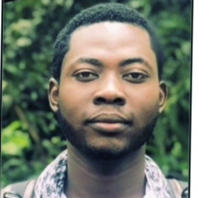
I am an AI Research Engineer focused on deep learning, computer vision, NLP, and software engineering for healthcare, agriculture, and low-resource African languages. My work spans AI-powered medical imaging, multilingual clinical NLP, agro-computing, and the application of rigorous software engineering principles to AI systems — with the mission that no African is left behind in the digital age.
"Adding more layers and adjusting the hyperparameters for victory and glory." — Akwasi Asare
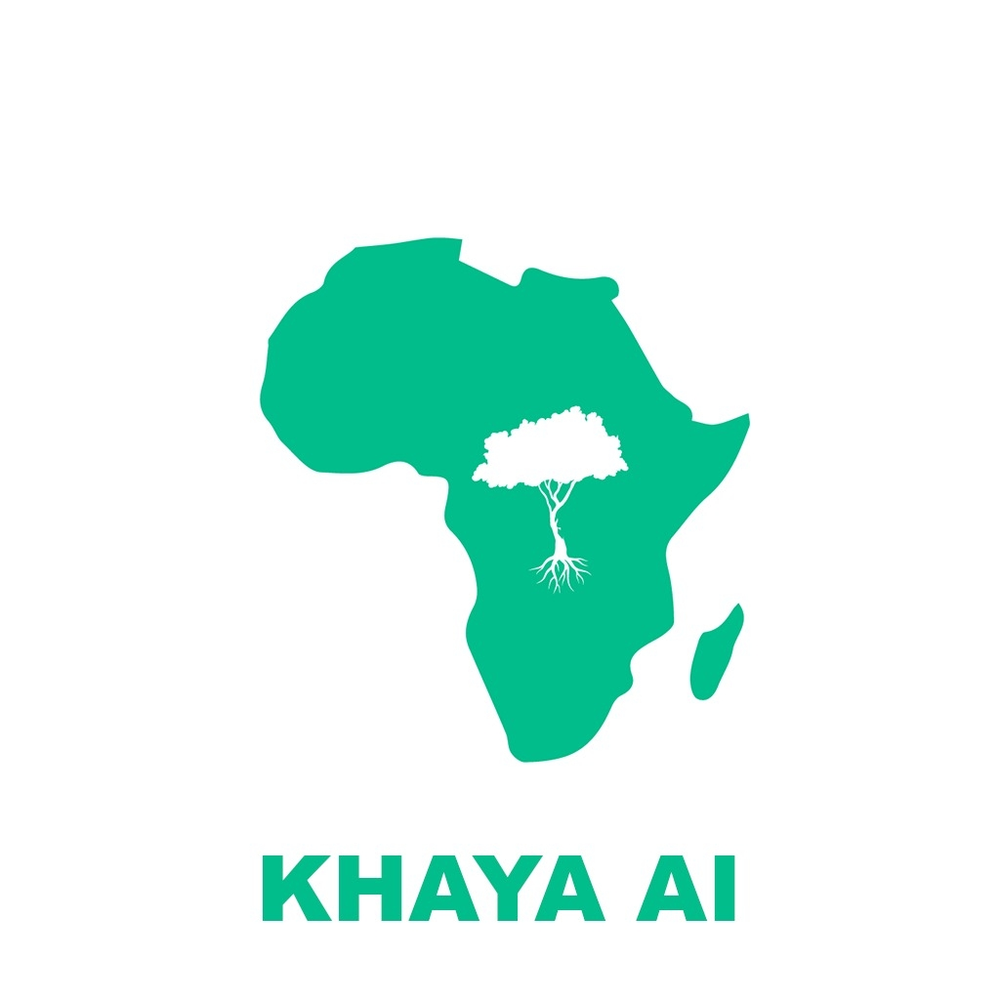
Khaya AI Company · Sept 2025 – Present
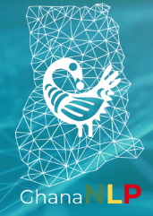
GhanaNLP · Sept 2024 – Present
Machine and Hybrid Intelligence Lab (Bagci Lab), Northwestern University · May 2025 – Present
Centre for Medical and Agro Computing (C-MAC)
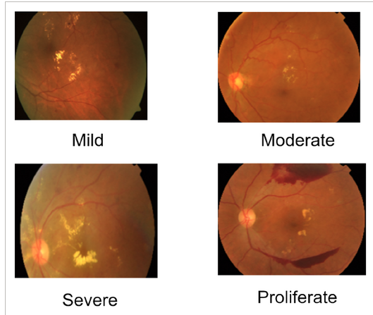
BMC Medical Imaging Journal, 2026
Automated segmentation of diabetic foot ulcers (DFUs) supports clinical diagnosis, treatment planning, and longitudinal wound monitoring, but remains difficult owing to the heterogeneous appearance, irregular morphology, and cluttered backgrounds of ulcers in clinical photographs.
Health Informatics Journal (Medicine Advances), 2025, 3(3): 231–241
Benchmarks two deep learning architectures — ResNet-18 and InceptionResNetV2 — for automated diabetic retinopathy grading, identifying which model delivers more reliable clinical performance for low-resource ophthalmic screening.
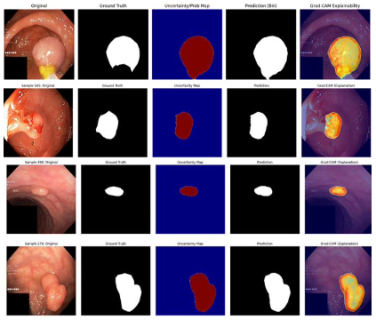
2026 Intl. Conference on AI, Computer, Data Sciences and Applications (ACDSA), Boracay Island, Philippines, pp. 1–8
Proposes an enhanced U-Net model with ResNet-34 encoder for colorectal polyp segmentation, and applies Grad-CAM visualizations to explain model decisions — improving both accuracy and clinical trustworthiness for gastrointestinal cancer screening.
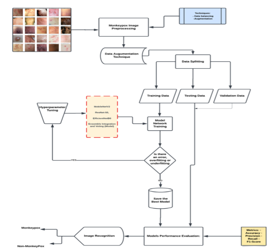
AI Revolution: Research, Ethics and Society (AIR-RES 2025), Springer CCIS Vol. 2723, pp. 166–189
Develops an ensemble deep learning model combining multiple CNN architectures to improve monkeypox skin lesion detection from medical images, addressing the urgent need for fast, scalable diagnostic tools during viral outbreaks in Africa.
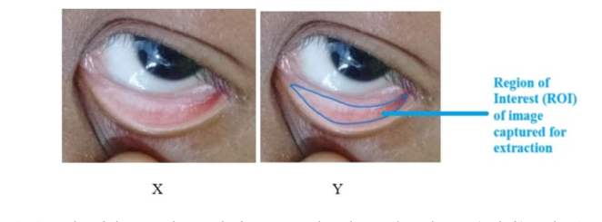
AI Revolution: Research, Ethics and Society (AIR-RES 2025), Springer CCIS Vol. 2723, pp. 144–156
Introduces a non-invasive deep learning approach that detects anemia in children by analyzing inner eyelid (palpebral conjunctiva) images using a hybrid three-layer CNN — offering a low-cost alternative to blood-based tests in resource-limited settings.
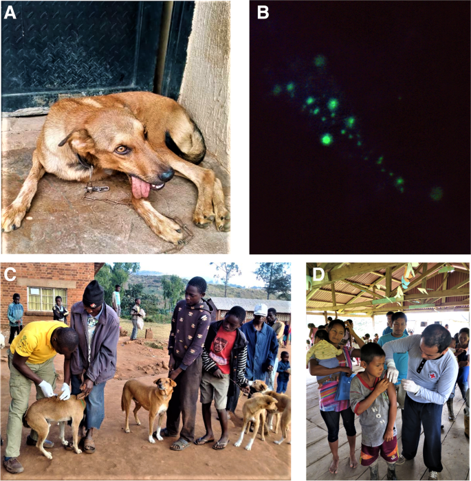
Intl. Conference on Computational Science and Computational Intelligence, Springer Nature, 2024, pp. 153–167
Applies machine learning models to epidemiological and environmental datasets to predict rabies outbreak hotspots across Africa, enabling public health authorities to prioritize intervention resources and reduce transmission risk.
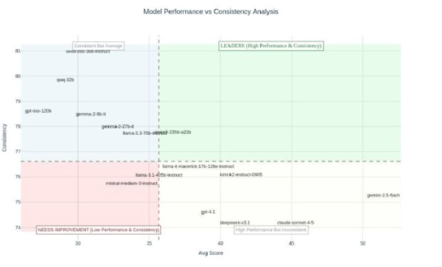
arXiv · Submitted May 2026
The most comprehensive evaluation of LLM translation to date for African languages — benchmarks 19 open-weight and proprietary LLMs on zero-shot translation across 43 Ghanaian languages, revealing that no current model achieves reliable, consistent performance for Ghanaian language translation at scale.
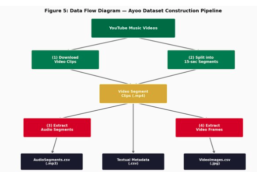
Research Square Preprint, 2026 · Univ. of Cape Coast · Ghana NLP · Center for AI Research, Ghana
Introduces Ayoo, a first-of-its-kind multilingual and multimodal dataset built from Ghana Music Award videos, enabling research in music information retrieval, audio-visual understanding, and NLP for Ghanaian languages including Twi, Ga, and Ewe.
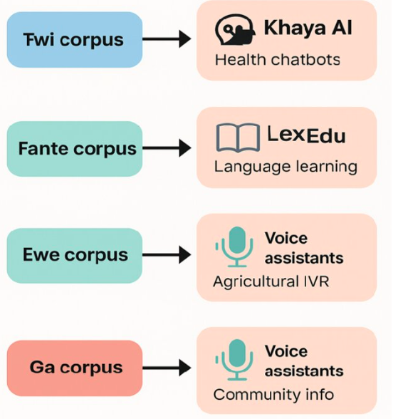
arXiv:2603.13793, 2026
Presents 41,513 human-curated parallel sentence pairs across Twi, Fante, Ewe, Ga, and Kusaal — providing the foundational multilingual data infrastructure that powers the Khaya AI translation engine and supports machine translation research for underrepresented Ghanaian languages.
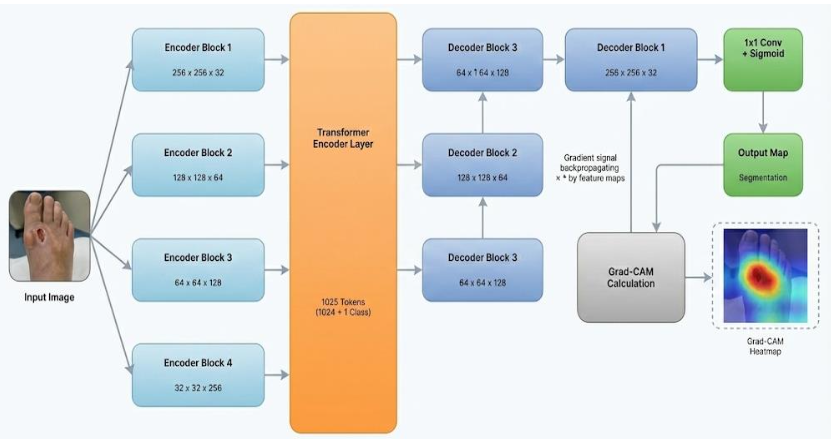
arXiv:2508.03758, 2025
Combines a Transformer-based U-Net with Grad-CAM explainability to accurately segment diabetic foot ulcers — helping clinicians visualize what the AI focuses on, improving trust and enabling better wound management decisions in clinical practice.
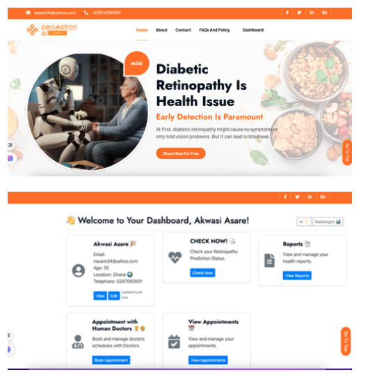
arXiv:2509.18160, 2025
Presents PerceptronCARE, a mobile teleophthalmology system that uses deep learning to diagnose diabetic retinopathy remotely — designed to extend specialist-level eye care to patients in underserved communities where ophthalmologists are scarce.
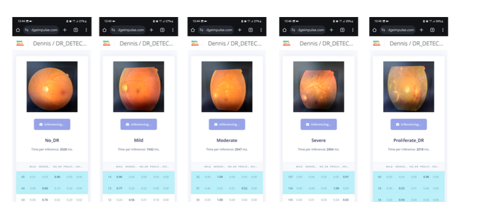
arXiv:2506.14834, 2025
Evaluates the real-world feasibility of running multiple deep learning models directly on low-power edge devices for diabetic retinopathy detection — comparing accuracy, latency, and efficiency trade-offs to guide deployment in off-grid and resource-constrained clinical environments.
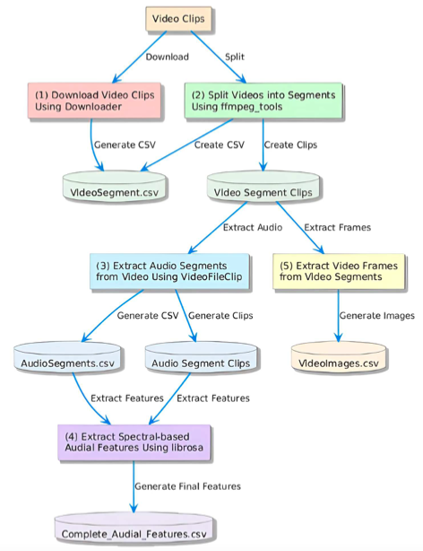
Research Square Preprint, 2024
Introduces Ndwom, the first multimodal music information retrieval dataset built from Akan-language music videos — bridging a critical gap in African audio-visual NLP research and enabling sentiment analysis, genre classification, and music recommendation in the Akan language.
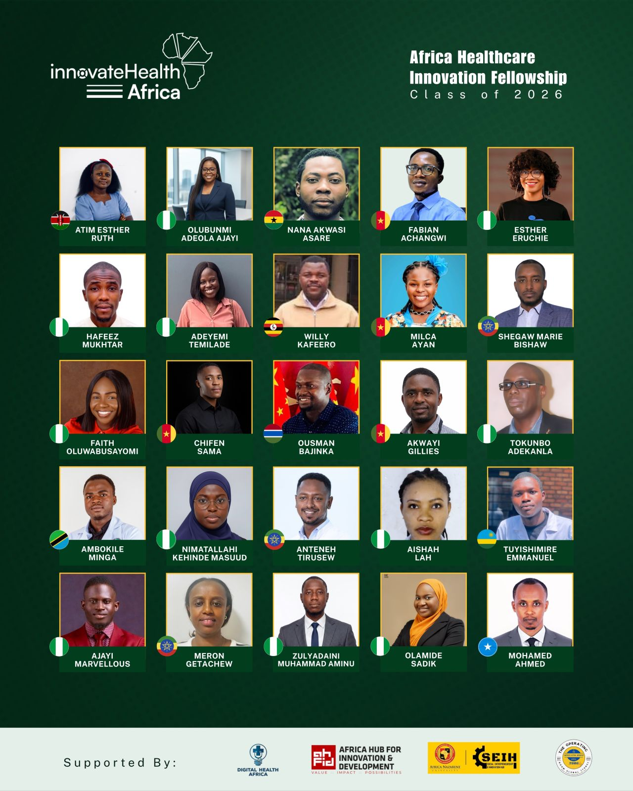
Selected from 3,500+ applicants as one of 45 fellows for the Africa Healthcare Innovation Fellowship (AHIF) by InnovateHealth Africa. The 12-week programme equips professionals to lead healthcare transformation across Africa. Focus: scalable, context-aware AI health solutions.
→ Announcement post
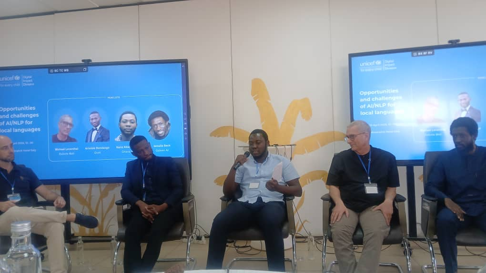
Represented Khaya AI and GhanaNLP at the UNICEF AI & NLP Summit as both panelist and Research & Implementation Lead on ASRH. Announced scaling from Ghanaian to 32+ African languages serving 500M+ people, and partnership with UNICEF to develop ASRH datasets in local languages.
→ LinkedIn post
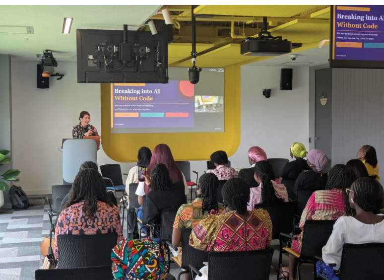
Invited speaker at the Women and AI event hosted by Tech Labari at the Google AI Community Center in Accra, representing Khaya AI. Talk: "Linguistic Justice: What Women in Tech Need to Know About Language, Power and AI." Discussed how biases in language and training data shape AI systems and affect representation, fairness, and opportunity.
→ Read event coverage — Tech Labari
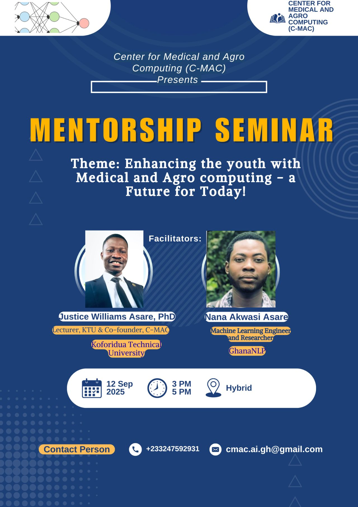
Lead speaker at the Center for Medical and Agro Computing (CMAC) Mentorship Program, Koforidua Technical University, 2025
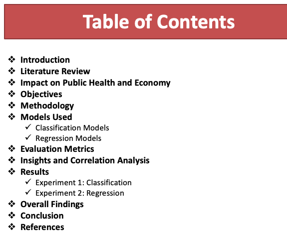
Intl. Conference on Computational Science and Computational Intelligence (CSCI), Las Vegas, 2024
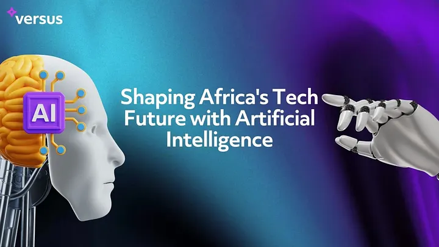
Medium blog post examining structural, economic, and data challenges holding back African AI adoption
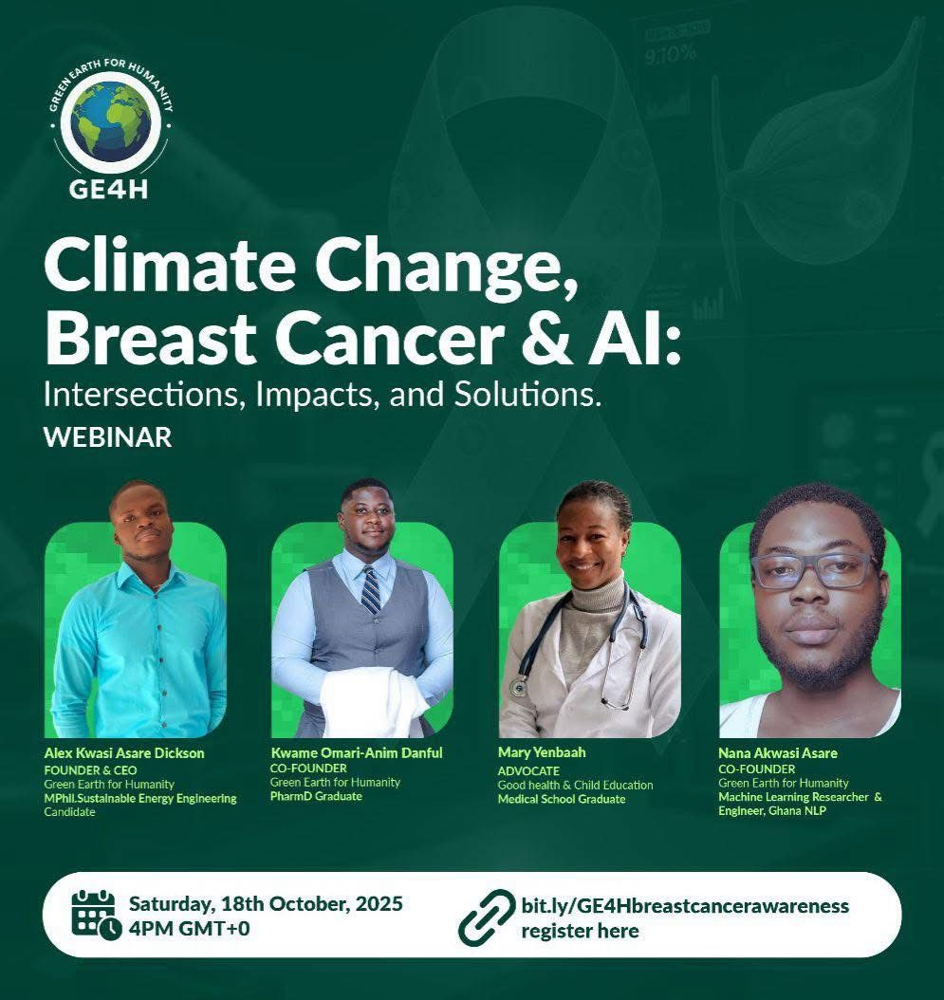
Speaker at Green Earth for HUMANITY (GE4H) webinar on AI for breast cancer detection and climate-health intersections. Oct 2025
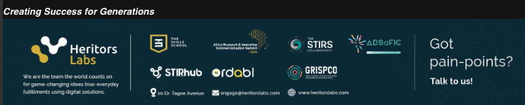
Invited participant developing Ghana's AI ethics guide — FAIR Forward program, implemented by GIZ, led by Heritors Labs. June 2025
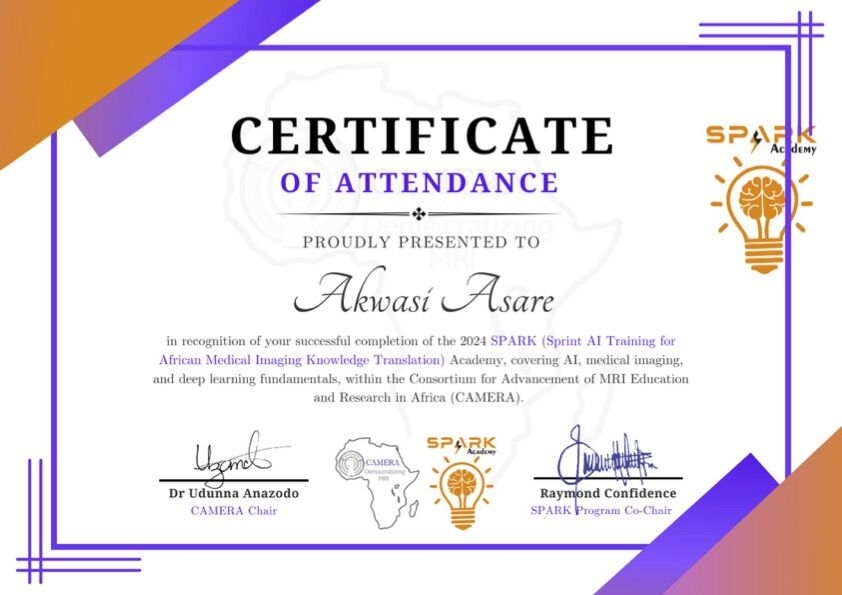
Sprint AI Training for African Medical Imaging Knowledge Translation (CAMERA Consortium). Focus: brain tumor segmentation, 2024
LLM-based AI system for Diabetic Retinopathy detection combining vision models and language intelligence for clinical decision support in resource-constrained settings.
AI-powered diabetic detection and monitoring device designed for deployment in low-resource settings across Africa.
Semi-supervised segmentation of tooth root pulp canals in 3D CBCT scans using UNet with attention mechanisms to reduce annotation burden.
Enhanced HaD-Net architecture on a 2D sliced dataset for precise pancreas segmentation in CT imaging.
Development of the Ndwom and Ayoo datasets and sentiment-aware music recommendation systems integrating audio and lyrical metadata across Ghanaian languages.